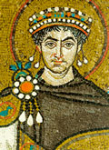

главная  персоналии
персоналии  Юстиниан I
Юстиниан I
главная |

Личность в историикраткая энциклопедияПроект «Личность в истории» посвящен людям — современникам грандиозных исторических событий, носителям редких качеств или людям, взгляды которых опередили их время. |
|||||||||||||||||||||||||||||||||||||||||||
Коротко |
Статьи |
Персоналии |
Литература |
||||||||||||||||||||||||||||||||||||||||
Юстиниан I |
|||||||||||||||||||||||||||||||||||||||||||
|
«Юстиниан был глубоко верующим человеком и выдающимся теологом. Он ставил себе честолюбивые цели… В его планы входило восстановление территориальной целостности Империи и отвоевание западных провинций и самого Рима у еретических варваров, наводнивших эти территории». А. Х. М. Джонс, |
 Юстиниан I. | ||||||||||||||||||||||||||||||||||||||||||
Биографическая справкаЮстиниан I (ок. 482/483–565 гг.) — император Византии с 527 г. Родом иллириец. Стремился к восстановлению былого могущества и прежних границ Римской империи. Им была проведена кодификация римского права. Юстиниан I поощрял развитие ремёсел и торговли. Вёл с помощью своих полководцев (Велизария, Нарсеса) широкую завоевательную политику: были временно отвоёваны захваченные варварами области Западной Римской империи (в 533–534 гг. Северная Африка, Сардиния и Корсика — у вандалов; в 535–555 гг. Италия и Сицилия — у остготов; в 554 г. — часть юго-восточной Испании — у вестготов). На Востоке войска Юстиниана I вели войны с Персией, на Севере отразили натиск славянских племён. Преследуя еретиков и инакомыслящих, Юстиниан I стремился к прочному союзу с православной церковью. При нём велось грандиозное строительство: возводились военные укрепления для обороны от вторжений варваров, отстраивались города, украшавшиеся дворцами и храмами (в Константинополе воздвигнут храм святой Софии). Видную роль в политической жизни Византии играла его жена Феодора. Хронология
Цитаты«Справедливо лишать земных благ того, кто неправильно поклоняется Богу». (Император Юстиниан) «Вы знаете, что военные походы и завоевания не делаются без денег; поэтому необходим, чтобы вы уплачивали общественные подати полностью и своевременно». (Император Юстиниан) «Немного времени спустя василевс Юстин, провозгласивший своего племянника Юстиниана соправителем, умер, и с этого времени царская власть перешла в руки одного Юстиниана. Этот Юстиниан приказал Велисарию построить крепость в местечке Миндуе, которое находится у самой персидской границы, по левую сторону, если идти в Нисибис. [Велисарий с величайшей поспешностью выполнял указание василевса, и стены укрепления, благодаря большому числу рабочих, поднялись уже высоко. » (Прокопий Кесарийский. Война с персами. Книга I. XIII. 1-4.) «Мы питаем полную надежду на то, что бог даст нам возможность возвратить все страны, которыми обладали древние римляне, до пределов обоих океанов». (Император Юстиниан) «Теперь я вижу собственными глазами этот знаменитый город, о котором я часто слышал с недоверием. <…> Без сомнения император — земной бог, и кто осмелиться на него подняться, сам будет виновен в пролитии собственной крови». (Король остготов Атанарих. Список литературы
|
|||||||||||||||||||||||||||||||||||||||||||
|